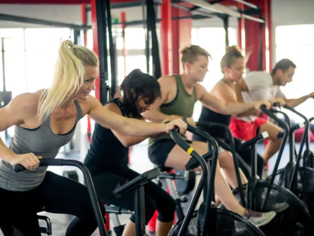
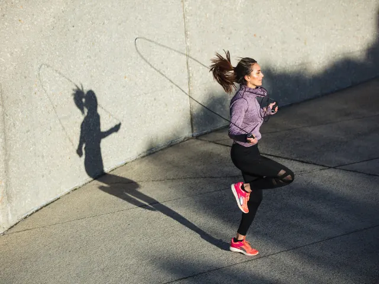
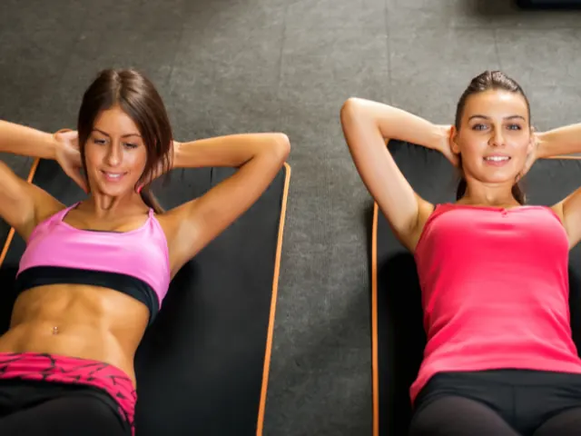
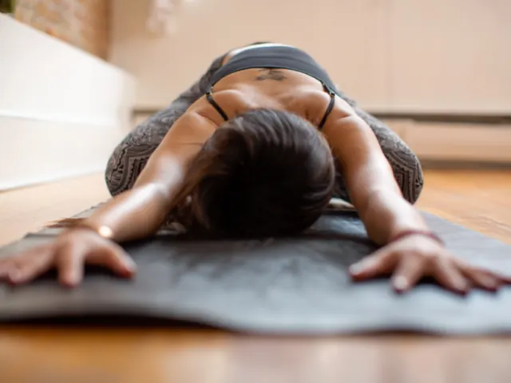

Partnerbijdrage
Afvallen met sport: tips voor een kleinere maat!
Gepubliceerd op 18 november 2022, bijgewerkt op 20 februari 2024

Kun je afvallen door de sporten? Dat is de vraag die velen bezighoudt. Een platte buik hebben, iedereen droomt ervan! Er zijn veel verschillende manieren om te profiteren van een slanker silhouet en een opgeblazen lichaam te overwinnen. Alle adviezen om af te vallen en vet te verliezen vind je in dit artikel.
Crosstraining en de voordelen ervan voor het lichaam
Vet verliezen en daarmee afvallen is niet eenvoudig. Om je doel te bereiken moet je jezelf vooral inzetten en niet zomaar een sport gaan doen. Ten eerste raden we je aan om crosstraining te proberen. Het is speciaal ontworpen voor mensen die ervan houden om oefeningen te diversifiëren. Deze methode bestaat namelijk uit het uitvoeren van een veelheid aan bewegingen, zoals gewichtheffen, uithoudingstrainingen en cardio. Tijdens de sessie zal de beoefenaar coördinatie, flexibiliteit en behendigheid moeten gebruiken. Voordat je hieraan begint, moet je eerst nadenken over je fysieke capaciteiten, omdat je dit echt uit gaat putten.
Cross-trainingssessies duren gemiddeld genomen dertig minuten. Voor beginners raden we aan om één of twee sessies per week te doen. Je kunt dit verhogen tot 3-4 trainingen als je eraan gewend bent. Deze discipline heeft een groot aantal voordelen voor het lichaam. Het helpt je om je figuur af te slanken en tegelijkertijd ook spieren op te bouwen in je benen, buikspieren, rug en billen. Het werkt ook op jouw cardiovasculaire systeem om bijvoorbeeld chronische ziekten, zoals cholesterol of diabetes, te voorkomen. Crosstraining is ook de ideale bondgenoot voor een gezondere levensstijl, omdat het gewichtsverlies en vetmassa bevordert.
Crossfit kan je doen bij onder andere:
- Crossfit Nijmegen
- The Kettlebellclub
- Crossfit Waalfront
- Ultrasport Nijmegen

Afvallen met een springtouw
Hoe kun je effectief gewicht verliezen? Hiervoor is er niets beter dan het versterken van fysieke oefeningen. Touwtje springen is een van de meest aanbevolen. Het verbetert niet alleen je balans, maar het is ook nog eens goed voor je hart. Bovendien kun je deze overal mee naartoe nemen omdat hij minder omvangrijk is. Stop hem gewoon in je tas en je bent klaar! Om het meeste uit dit accessoire te halen, raden we je aan om comfortabele kleding en schoenen te dragen. Zorg ervoor dat je schoenen licht en flexibel zijn. Zo kunnen ze jouw sprongen aanzienlijk dempen. Bij het kiezen van de schoenen is er niets beters dan het model schoenen te kiezen die het beste bij jouw voeten passen, dus probeer ze altijd eerst even uit voordat je ze gaat kopen.
Voor de uitvoering van deze oefening om af te vallen en vet te verliezen volgen hier de verschillende stappen die je moet volgen. Om de armen te versterken moet je eerst het touw met slechts één arm oprollen, zonder te springen. Ben je bang voor rugpijn na het sporten? Voorkom dat je op je hielen landt. Het is beter om het gewicht op de voorkant van de voet te plaatsen. Je moet tijdens de sessie altijd goed recht vooruit kijken. Om van de voordelen van deze oefening te profiteren moet je niet vergeten om je buikspieren goed vast te houden tijdens de bewegingen en om je rug recht te houden. De sessie duurt meestal 10 minuten als je een beginner bent. Wil je een beter resultaat, zorg dan dat je 2 tot 3 keer per week in actie komt. Wanneer je eraan begint te wennen, kun je dit uitbreiden naar 20 minuten per sessie, en later zelfs naar 30 minuten, opwerkend naar een uur.
Het leuke van touwtjespringen is dat je het echt overal en altijd kan doen. Koop voor een paar tientjes een goed springtouw en ga aan de slag! Heb je een stok achter de deur nodig kan je terecht bij één van de vele sportscholen die Nijmegen rijk is.
Denk onder andere aan:
- Basic-Fit
- Avalon Fitcentre
- Sportcentrum Nijmegen 82
- New age 22 Sportlounge
- My Healthclub
- Plaza Sport
- Fit20

Ga wandelen om af te vallen en vet te verbranden
Ben je op zoek naar oefeningen om gewicht te verliezen? Er is niets beter dan ongeveer 10000 stappen per dag te zetten. Een moeilijk doel om dagelijks te bereiken, zeker als je met de auto naar je werk gaat. Om de kloof te compenseren, heb je de keuze tussen verschillende disciplines:
Nordic walking
Deze oefening vereist het gebruik van een stok. Dit laatste is ook je beste bondgenoot, omdat het je gewrichten kalmeert en je beetje bij beetje vooruit helpt. Dit type wandeling zal je vast fijn vinden, omdat het bestaat uit werken aan je balans en coördinatie.
Snelwandelen
Dit is een van de snelste oefeningen. Wandel zoals je altijd doet, maar dan sneller en zorg ervoor dat de ene voet vlakbij de andere voet blijft, zonder te rennen. Zorg er ook voor dat je altijd contact houdt met de grond. Gebruik je armen hierbij om meer snelheid te krijgen.
Hardlopen
Naast deze oefeningen kun je gaan hardlopen, een perfecte training om meer vet te verliezen en om zodoende tussen de 700 en 1000 calorieën per uur te verbranden. Een trainingssessie kan tussen de 30 en 45 minuten duren, afhankelijk van je niveau en fysieke mogelijkheden en zal je helpen afvallen.
Nijmegen kent een aantal hardloopverenigingen. Denk hierbij aan Gezond Hardlopen, Nijmeegse FunRunners, Running Skills Nijmegen of stichting Topsport Atlhetiekvereniging Nijmegen. Zoek je nog hardloopkleding kan je terecht bij Decathlon en Run2Day.
Zwemmen, de ideale bondgenoot om je buikspieren op te bouwen
Zwemmen is het beste alternatief om je lichaam in harmonie te versterken. Ja maar hoe ? Dankzij de inspanning tegen de weerstand van het water. Je kunt verschillende oefeningen uitvoeren zoals rugslag, borstcrawl, schoolslag, vlinderslag, etc. We raden je daarom aan om per sessie ongeveer 45 minuten te zwemmen. Vind gewoon het juiste ritme en veel plezier, en je bent klaar. Merk op dat de schoolslag ongeveer 340 calorieën per 30 minuten verbrandt vergeleken met 380 calorieën voor de borstcrawl.
Om de resultaten te vermenigvuldigen zullen de vlinderslag of een golfslag het werk perfect doen. De een gebruikt net als de ander de buikspieren en draagt zo bij aan het verlies van calorieën. Om de tweede techniek goed uit te voeren moet je de armen strekken terwijl je op de buik ligt. Om golven te maken moet je met je voeten duwen. Je hebt de mogelijkheid om het spel nog een beetje leuker te maken door golvingen aan de zijkant te maken.
De crawl is ook een zeer geschikte methode om meer vet te verliezen. Voor een optimaal resultaat moet je bij elke gemaakte beweging jouw armen goed strekken. Hoewel zwemmen heel goed werkt kan het een tijdje duren voordat je resultaat boekt. Vergeet niet om in jouw eigen tempo te zwemmen en de frequentie te verhogen als je eraan gewend bent.
Zwemmen kan je onder andere bij de volgende zwembaden:
- Zwembad Sportfondsenbad Nijmegen
- Zwembad Dukenburg
- Zwemschool Henricus
- Erica Terpstra Sportfondsenbad
- Openluchtbad De Goffert
- Zwembad Winkelsteeg
- Zwembad De Plons
- Buitenzwembad De Tuimelaar
Ben je trouwens op zoek naar een privé zwembad bij je huis kan je eens een bezoek brengen aan Sprenkels Zwembaden in Nijmegen. Hun ontwerpen en realiseren al je wensen en dromen in een prachtig design. Zo hoef je nooit meer je huis uit om lekker te zwemmen.

Is fietsen efficiënt om af te vallen?
Hoe kun je gemakkelijk afvallen? Hiervoor raden we je aan om op de fiets te stappen. Dit type oefening helpt je kracht op te bouwen en tegelijkertijd ook je cardiovasculaire systeem te versterken. Het is daarom de beste bondgenoot voor effectief gewichtsverlies.
Tuurlijk, deze training kan dagelijks worden gedaan. Je kunt je fiets als vervoermiddel gebruiken om bijvoorbeeld naar kantoor te gaan. Probeer voordat je dat doel bereikt echter te trappen totdat jezelf moet voelt worden. Maak je geen zorgen, je uithoudingsvermogen zal geleidelijk toenemen. Over het algemeen kun je met een training tussen de 400 en 800 calorieën verbranden. Tegelijkertijd draagt het bij aan het behoud van je spieren en vooral aan het verfijnen van je lichaam.
Als je wilt afvallen en het resultaat op de lange termijn wilt behouden dan hoef je alleen maar een soort regelmaat aan te brengen tijdens je trainingen. Leg jezelf niet te veel druk op en geniet! Om jouw voortgang te bepalen, is er niets beters dan de voortgang te volgen via geschikte apps. Als je geen tijd hebt om regelmatig naar de sportschool te gaan, is een fiets alles wat je nodig hebt.
Ben je student, dan kan je terecht bij de Nijmeegse Studenten Wielervereniging Mercurius en anders kan je een bezoekje brengen aan de Wedrenners.

Is het mogelijk om vet te verbranden door buikspier oefeningen te doen?
We hebben altijd de slechte gewoonte om meteen buikspieroefeningen te doen als we een buik beginnen te krijgen. In tegenstelling tot wat vaak wordt gedacht, helpt dit soort oefeningen je niet noodzakelijkerwijs om vet te verliezen. Om het resultaat te accentueren is het beter om de bewegingen en oefeningen te variëren, maar je kunt niet plaatselijk vet verliezen door enkel maar buikspieroefeningen te doen, maar ze kunnen je wel helpen je buikspieren in conditie te houden. Crunches en andere buikspieroefeningen kun je altijd doen. Professionals zeggen echter dat buikspieroefeningen de beste bondgenoten zijn om rugpijn te bestrijden.
Als je niet op je figuur let, houd er dan rekening mee dat de buik een vetopslag kan worden, omdat dit het minst gevasculariseerde deel van het lichaam is. Omgekeerd houdt een platte buik je weg van veel chronische ziekten. Ook verbetert het de bescherming van de rug en organen.

Vet verbranden met yoga?
Yoga is alles wat je nodig hebt. Het stelt je namelijk in staat om de juiste houding aan te nemen. De rustige oefeningen zorgen er ook voor dat je de spieren van je hele lichaam traint. Ook helpt het je om een platte buik en een slank figuur te hebben. De yogatechniek is zeer eenvoudig. Het bestaat uit werken aan je balans en je uithoudingsvermogen. Daarbij vereist het de samentrekking van de buikspieren gedurende de hele sessie.
Daarnaast is yoga een zeer populaire training, bekend bij jong en oud en het belangrijkste is dat dit voor de meeste mensen gemakkelijk om te doen is. Het leert je om je ademhaling en je lichaam te beheersen. Wat is dan een betere manier om je gemakkelijk te ontspannen? Het vermindert ook het snacken overdag en het verbetert je concentratie aanzienlijk. Om van deze voordelen te profiteren adviseren wij je om 2 sessies per week uit te voeren. Als je eenmaal begrijpt hoe het werkt, zal je gewichtsverliesproces versnellen.
Ook zin in Yoga? Loop eens binnen bij één van de volgende yoga studio’s:
- Yoga studio Harsa
- Yoga-studio Susumna
- Centrum voor Yoga en Zwangerschapsbegeleiding Heleen Backus
- Yogacentrum Oost
- Yogastudio Soham Nijmegen
- Yogastudio Loft
- Studio Ganga
- Yoga praktijk Anne Kanters
- Yogaschool Ron van der Post
- Anahata Nijmegen
- Yogapraktijk Gaia
Moet je om af te vallen ook op dieet?
Naast sport is het beheren van je dieet een van de meest effectieve manieren om gewicht te verliezen. De eerste stap is daarom om jezelf ongeveer 30 minuten te geven om te eten. Deze techniek verbetert het verzadigingsgevoel aanzienlijk en vermindert het risico op obesitas of overgewicht. Voordat je aan fysieke oefeningen begint, moet je eerst jouw eetpatroon veranderen. Geef daarom de voorkeur aan de consumptie van peulvruchten, volle granen en groenten. Ga dan verder met pro-biotische voedingsmiddelen, zoals bijvoorbeeld zuurdesembrood of yoghurt. Deze producten bevorderen je spijsvertering, versterken ook je spijsverteringskanaal en ze kunnen een opgeblazen gevoel verminderen.
Groente is nodig
Voeg veel groenten toe aan je voeding. Ze bevatten niet alleen veel vezels, maar zitten ook boordevol water. Let wel op je zoutinname, want zout zorgt ervoor dat je water vasthoudt, dus is het beter om het gebruik ervan te beperken. Maak er altijd een gewoonte van om jouw maaltijd te proeven voordat je zout toevoegt. Hoewel vezels het transport door de darmen verbeteren, is het essentieel om de te consumeren hoeveelheden per dag in de gaten te houden. We raden aan om niet meer dan 30 gram vezels te gebruiken.
We hopen dat je na het lezen van dit artikel voldoende mogelijkheden te hebben gezien hoe je op een eenvoudige manier een paar kilo lichter kan worden en je daarmee fitter kan voelen. Heb je een stok achter de deur nodig hebben kan je eens binnenlopen bij een Diëtist of voedingscoach. Deze kunnen je zeker verder helpen.
- Happy Mind Happy Body
- Voedingswijs kinderdietist en eetcoach
- Voeding- en beweegadvies Inzicht
- Voedingspraktijk De Wijze Keuze